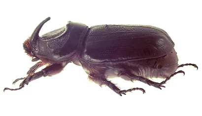
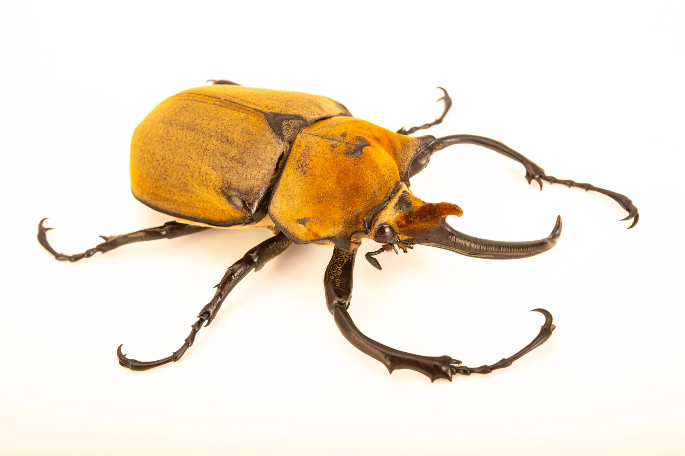

☀️
The rhinoceros beetle is one of the strongest insects on Earth, known for the large horn-like projection on the males’ heads that looks similar to a rhino’s horn. These beetles use their horns to fight other males for mates, flipping and pushing each other in impressive strength contests. Despite their fierce appearance, they’re actually harmless to humans—they don’t bite or sting. They feed mainly on fruit, sap, and decaying plant material, and their larvae live underground where they grow for months or even years before emerging as adults. In many cultures, they’re considered symbols of strength, and in some places, people even keep them as pets or use them in beetle wrestling competitions.
Rhinoceros beetles are also famous for their incredible strength-to-size ratio, capable of lifting objects many times their own body weight. They are mostly nocturnal, becoming active at night when they search for food and mates. As adults, their lifespan is relatively short—often only a few months—but their larval stage can last much longer, making up most of their life cycle. These beetles play an important ecological role by helping break down rotting wood and plant matter, which recycles nutrients back into the soil. Although many species are widespread across tropical and subtropical regions, some are threatened by habitat loss, making conservation of their natural environments increasingly important.

 beetle.jpg)

